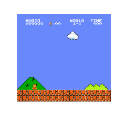
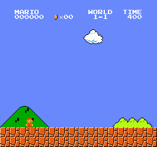

途中結果(論文完成時には削除予定)
報酬を変更したやつ

上のはとりあえず10000エピソードで実行
50000エピソードでやってみた

なんで？すぐ死ぬ
右行くよりすぐ死ぬほうが収益いいのか？
時間のペナルティなしでやってみる
今まで一番いいｲｴ━━٩(*´ᗜ`)ㅅ(ˊᗜˋ*)و━━ｲ
続き
ジャンプをたくさんするように下のソースコードのような報酬を追加で設定していた.
def _y_reward(self):
if self._y_position < 79:
return 0
_reward = (self._y_position - self._y_position_last) / 10
self._y_position_last = self._y_position
return _reward
これを下のように_rewardの値を増やした.
def _y_reward(self):
if self._y_position < 79:
return 0
_reward = (self._y_position - self._y_position_last) / 5
self._y_position_last = self._y_position
return _reward
これで10000エピソード実行させた.
半分までいったら途中から再開してる!?途中から再開もありなら一番いい!!!
上の_y_reward関数の_reward確認したら上昇中はプラスの報酬だけど下降中はマイナスの報酬になってることに気づいた.
変更
def _y_reward(self):
if (self._y_position <= 79) or (self._y_position - self._y_position_last < 0):
return 0
_reward = (self._y_position - self._y_position_last) / 5
self._y_position_last = self._y_position
return _reward
これも10000エピソードで実行
もっとジャンプするようになった. これも途中から再開してる. スターは運よく取ってる.
このクリボーさえ超えていればゴールだったのに (ﾓｰ! ＜＜o(＞-＜)o＞＞ ｸﾔｼｨｰ!!)
何回か実行して偶然キノコ取ったバージョン
途中から再開できることを知ったので, マリオが死ぬ前の状態に戻せるのではないかと考える.
調べたらgym-super-mario-bros 1-1を1歩ずつ5歩先のrewardを計算してクリアするにあった.
とりあえず真似して実行させた.

5歩先までマリオを進めて, その時のrewardを記録し, resetして戻る. 25=32パターンのうちで一番大きいrewardに繋がる1歩目を採用して進み, そこでbackupするらしい.
ゴールはしたけど自分がやりたかった学習方法ではない...そもそも深層強化学習でもない気がする.
しかもGPUまったく使わないし, 実際にDDQNでゴールできるやつは1日かけて学習させるのに, これは20分で終わった.
深層強化学習は実行させるたびに異なる結果が得られるのにこれはまったく同じのしか出ない. どういうこと?
不採用
地道に報酬変えて頑張るしかないみたい...(*´-Д-)ﾊｧ=3
トップ
DDQN
PER
DDQN遊び